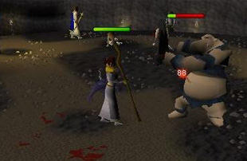
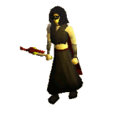

")
Mage Arena (Members)
Introduction | Location | Requirements | Recommended Items
Unlocking the Power of the Gods | Rewards | Development Team
Unlocking the Power of the Gods | Rewards | Development Team
The Mage Arena is only accessible to RuneScape Members. Please subscribe to get this feature.
Please note this is a 'Dangerous' area. If you die, you will lose your items.
Introduction

Prove yourself worthy to this bloodthirsty wizard by surviving the trials of the Mage Arena and he will teach you spells capable of summoning the power of the gods themselves!
Location

Please be aware that due to the depth of the Wilderness, monsters may be waiting for you to arrive. Also remember that this far into the Wilderness, you are more likely to be attacked by revenants.
There are a few ways to get to this far into the Wilderness, but as ever, you may encounter wandering revenants, so remain alert.
From the Ardougne teleport lever:
The first method of traveling to the Mage Arena is by using the teleport lever in Ardougne. The lever is two-way (you can use it to get back to Ardougne) and it will teleport you to the Deep Wilderness, not far from the arena. When you are here, you will need to head north and use your slashing weapon to cut the spiderweb that blocks the way. From here, head west past the top of the arena.
On foot from the Wilderness:
The second method is walking. Long as the journey may be, the area surrounding the lever is dangerous. You will need to walk all the way to the gates in deep Wilderness. There are two gates; one near the greater demon area and another on the Ice Plateau. If you are coming from the greater demons, you will need to head west once through the gate. If you are coming from Ice Plateau, you will need to go east once through the gates. Again, locate the arena (a short walk).
Teleports:
Finally, you can use teleport spells, such as the Ancient Magicks, to teleport you to certain depths of the Wilderness. From here, follow the above advice for walking.

Please note: As there is a bank here, it is strongly advised you save withdrawing all your runes/magical equipment until you get to the arena bank. This will mean if you are attacked on your journey to the Arena, you will not lose vital items if you die.
Requirements
To fight in the arena requires 60 Magic. You must also be able to fight and kill increasingly difficult monsters with Magic only.
To cast the god spells, 60 Magic is required.
Also, a Prayer level of 37 is recommended so that you can use Protect from Magic.
Recommended Items
To fight in the Arena, you should take runes of your chosen spells.
Prayer potions are also recommended if you are using Protect from Magic.
After beating Kolodion, you can choose your god spell, so it is advised you bring runes to cast the spell 100 times to unlock it (explained below).
Unlocking the Power of the Gods
Firstly, withdraw your chosen mage items and don't forget your runes.
Speak with Kolodion, and challenge him to fight in the Arena.
You will then be teleported (with Kolodion) into the heart of the Arena. From here Kolodion is to be destroyed in all of his forms. If, for some reason, you decide to run away or are defeated by Kolodion then on your next attempt you will start at the form you retreated from.
When you have killed him, you will discover he can shapeshift into a tougher, ogre giant.
After defeating the ogre giant, you will find the fight is far from over, as he will shift into the form of a giant spider. Depending on your method of fighting (if you have food supplies or Prayer), it may be advisable to use Protect from Magic.
As the giant spider dies, Kolodion will continue to shift forms. This time he will change into a large wraith-man. The fight gets tougher here, so make sure you eat and top up your Prayer if you take damage.
There is power left in Kolodion yet. As the wraith dies, Kolodion shifts into his final guise - a massive level 112 demon. Stay focused and continue to unleash your Magic spells.
When you have defeated all of his forms, you will be teleported out of the arena and Kolodion will congratulate you on a fight well fought.
He will then explain the god spells and the need for you to choose your god. To do this, head into the nearby 'Sparkling pool' and you will come out near a staff merchant.

Head back with your cape and speak to the merchant. He will then give you the staff of your chosen God. To unlock the god spells and use them outside of the arena, you must cast them 100 times inside the arena.
To get back into the arena, head back out of the sparkling pool to the safe area, then pull the lever to return to the Wilderness hut. If you decide it is safe to go for it, use your slashing weapon to get out of the hut, and head east to the entrance where you will need to slash webs again. In the small room past the web, pull another lever to teleport you the other side. Here, run south-west around the outskirts, and into the arena ramp entrance.
 When here you will see level 54 battle mages. The battle mages of your chosen god will not attack you if you do not attack them (i.e: If you are wearing a Zamorak cape and using a Zamorak staff then the Zamorak battle mage will not attack you). As you will find out, the battle mages that do not fight for your god will attack you, so it is advised you train your god spells on them.
Be careful as they retaliate in style - using their god spells! These can be very damaging, so Protect from Magic Prayers are advised for the whole encounter. When you have cast the spell 100 times, you will have unlocked the chosen spell and be able to use it outside. You will be shown a message to confirm this.
As a side note - if you take the exact number of runes to cast the spell 100 times, then you can see from the runes remaining how many more spells you need to cast.
After all this is done, you can head back to the staff merchant and buy the other two staffs to begin unlocking the other spells. You may only obtain one cape at a time, so the current cape must be dropped for you to pray at your new statue. With this, you can then cast the other god spells 100 times and unlock all three for outside use!
Rewards
Of course the rewards come from unlocking the extremely damaging god spells, which can hit up to 200 points of damage.
![[image]](../../img/main/kbase/skills/magic/spells/charge1.gif) Further to this, if your Magic level is 80 or more, you can use the spell 'Charge' which will increase the damage even more (hitting up to a possible 300) for a period of approximately seven minutes, provided you are wearing one of the Mage Arena god capes.
Further to this, if your Magic level is 80 or more, you can use the spell 'Charge' which will increase the damage even more (hitting up to a possible 300) for a period of approximately seven minutes, provided you are wearing one of the Mage Arena god capes.
Development Team
Developer: Tom W
QA: Simon B
Audio: Ian T

More articles in
Other
|
|